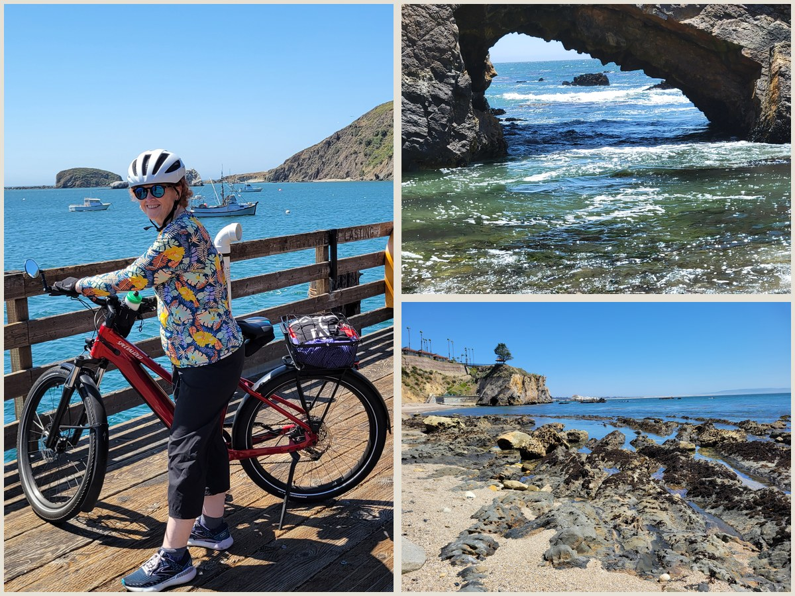
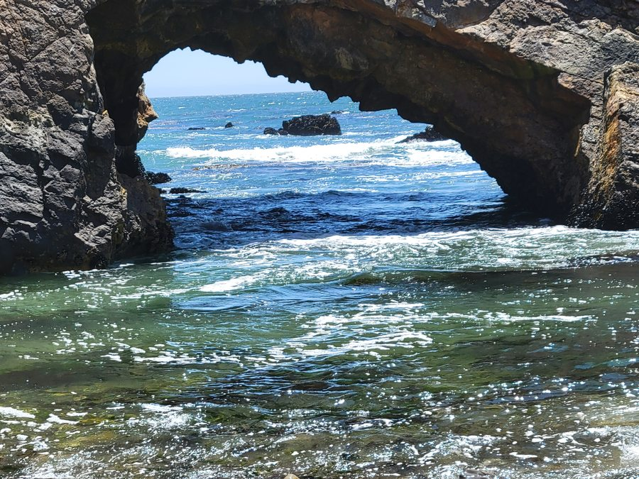

Wednesday, April 29, 2026
3993 Avila Beach Dr, San Luis Obispo, CA 93405, USA

Spent a sunny Wednesday cycling Avila Beach's pier in the morning, then drove south to explore Pismo Beach's sea arches and coastal bluffs in the afternoon.
Highlights:
- Avila Beach Pier — historic Central Coast harbor pier offering views of the calm Avila Beach anchorage and surrounding coastal hills
- Pismo Beach — city on California's Central Coast known for its rugged sea arches, tide pools, and rocky Pacific shoreline
- Dinosaur Caves Park — coastal bluff park in Pismo Beach named for a former dinosaur-themed attraction, offering panoramic views of sandstone cliffs and tide pools below

